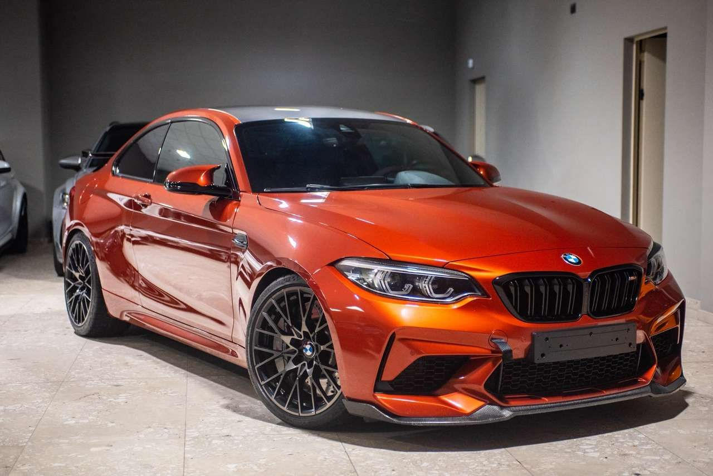
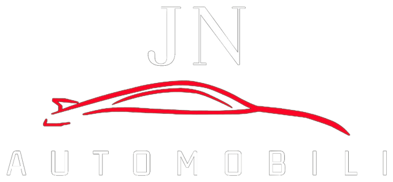
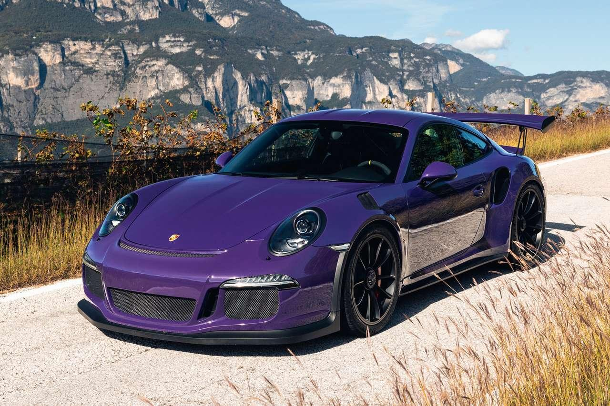
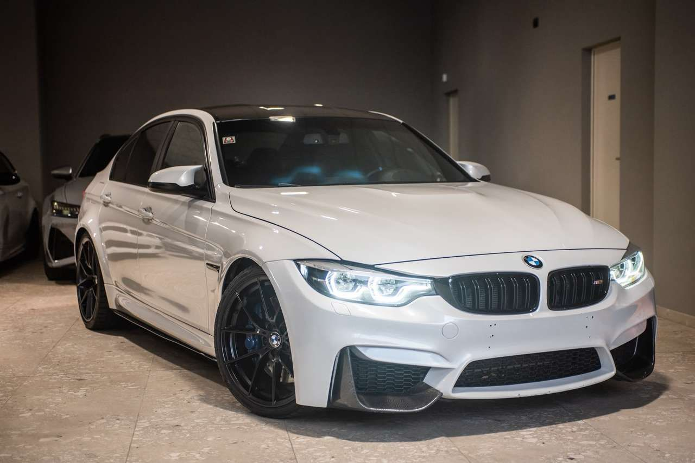
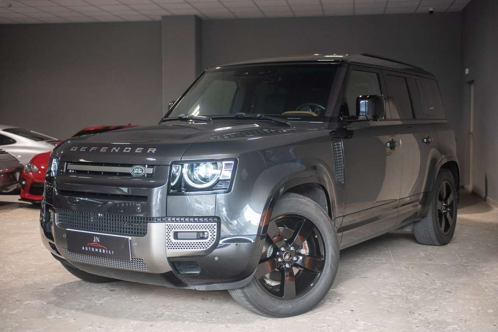
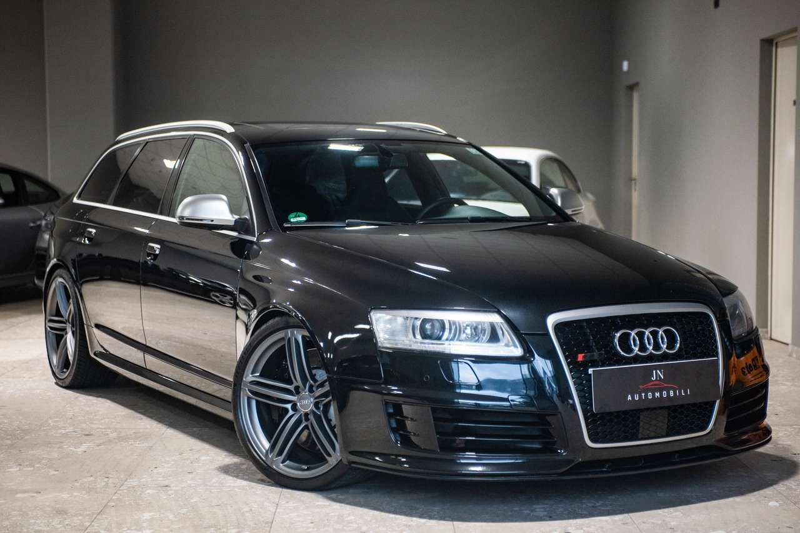
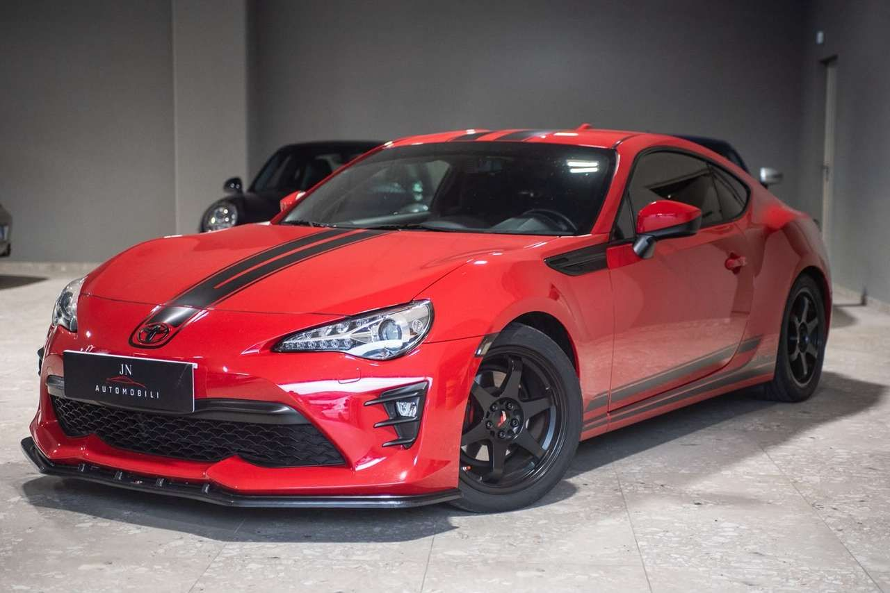

BMW M2 Competition
Annuncio completo su AutoScout24
Coupé 3.0, cambio a doppia frizione
Anno03/2019
Km85.000
Cavalli411

A Trento, a Spini di Gardolo. Le nostre vetture vengono ispezionate da meccanici specializzati prima della consegna.
Alcune delle auto che trovate da noi in questi giorni. Ogni scheda porta all'annuncio completo, con prezzo e foto.

Coupé 3.0, cambio a doppia frizione

991, pellicola protettiva, Porsche Approved fino al 02/2028

F80 3.0, bianco perla, unico proprietario

3.0d mild hybrid X-Dynamic HSE, 6 posti, automatico

5.0 V10 quattro tiptronic

JN Automobili
Via Linz 1, Spini di Gardolo
38121 Trento
Cellulare e WhatsApp 329 173 3608
| Lunedì | 9:00 - 19:30 |
|---|---|
| Martedì | 9:00 - 19:30 |
| Mercoledì | 9:00 - 19:30 |
| Giovedì | 9:00 - 19:30 |
| Venerdì | 9:00 - 19:30 |
| Sabato | 9:00 - 12:30 |
| Domenica | chiuso |